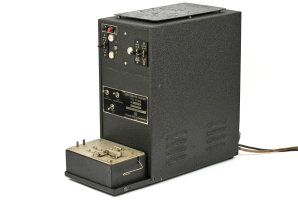

The Jefferson disk, is a cipher system commonly attributed to Thomas Jefferson that uses a set of wheels or disks, each with letters of the alphabet arranged around their edge in an order, which is different for each disk and is usually ordered randomly. Each disk is marked with a unique number and a hole in the center of the disks allows them to be stacked on an axle. The disks are removable and can be mounted on the axle in any order desired. The order of the disks is the cipher key, and both sender and receiver must arrange the disks in the same predefined order.Once the disks have been placed on the axle in the agreed order, the sender rotates each disk up and down until a desired message is spelled out in one row.
Enigma
The Enigma was a portable electro-mechanical device using rotors (3 for the army, 4 for the navy) to encrypt and decipher messages. During the Second World War, the British mathematician Turing and his colleagues took up the work of the Polish mathematicians Rejewski, Różycki and Zygalski, who had managed to decipher messages sent by the Enigma using an electro-mechanical device nicknamed the "Rejewski bomb".
PACE
PACE, short for Portable Automatic Cryptographic Equipment, is a handheld terminal for off-line encryption and decryption of tactical messages, developed in the early 1980s by Lehmkuhl in Norway. The device is NATO-approved up to the level of NATO SECRET 1 and is also known as the MI-300 Cryptographic Field Terminal by NFT Crypto from Oslo

ETCRRM
ETCRRM was an offline/online One-Time Tape cipher machine, developed around 1953 by Standard Telefon og Kabelfabrik A/S in Oslo, for use by the Norwegian Armed Forces and NATO. It uses the Vernam Cipher principle, implemented with valves and relays. From 1963 onwards, the machine was used on the Washington-Moscow hotline until it was succeeded in 1980 by the solid-state Siemens M-190. In the UK it was known as BID/570.